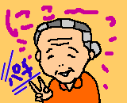
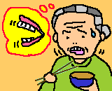

地域の中学生がボランティア。一緒に蒸し団子を作ったり、歌や踊りを披露したり。
ばあちゃん担当の男の子二人。おずおずと話しかけたり、遠巻きに眺めていたり。
おばあさんは、お幾つですか？ なんば言っとるとか、いっちょん聞こえん。
お団子を一緒に作りましょう。 手は出さんでよか、自分でやるけん。
昔取った杵づか。見事に綺麗に丸くなる。
今日は、楽しかったですか。 なんばしたかねぇ。楽しかったじゃろ。
最後に、お約束のお手紙。 いつまでもいつまでもお元気で。
ありがとねぇ。うってかわって涙声。
ぶっきらぼうだった男の子たちも、戸惑いの顔。
スタッフがこっそり言う。お年寄りがボランティアしてるんじゃないかしら。
エレベーターホールで、食事の時間を待っている。
トイレに行ったばあちゃんに、タオル・ハンカチを渡す。
KENという文字が、模様のような筆記体で書かれている。
何度も何度も検分しては、首をひねる。気に入った？ あげるよ。
大のろ、って書いてあるねぇ。
ハワイアンまつりでは、入居者、職員、ボランティア、みんなアロハシャツを着る。
ばあちゃんは、去年と同じ、ちょっと地味な茶色がかったシャツ。
四時過ぎに、エレベーター前で、外に出るのを待っている。
新しいアロハシャツを着た、元音楽の先生が、
何度も、すくっと立ち上がっては、ばあちゃんの前を往き来する。
その動きをじっと目で追って、ばあちゃんはつぶやく。
ハワイアンまつりでは、舞台のまん前の席に座った。
大きなスピーカーがガンガン鳴っている。
舞台では、入れ代わり立ち代わり、
きらびやかな衣装の踊り手が、
右へ左へとゆらめいている。
ばあちゃんには、目にも耳にも何も入らない。
空腹であったり、寝ぼけていたりすると、
執着心なし、心ここにあらずだが、
あまりに音が大きすぎて、あまりに舞台がまぶしすぎて、
三年のうちに、90年のうちに、すっかり年を取ってしまって、
ウツツの騒ぎになんぞ、まったく関心がなくなってしまったようだ。
えっちゃん、こっち向いて〜！ 突然声がかかる。
ぼんやりと顔をあげ、舞台に目を投じるが、
瞳はうつろ。
そっちじゃなくて、こっちだよぉ。
スタッフがカメラを向けている。
途端に

***
夜、ベッドに横になり、わしは一人で泊まるのかとつぶやいた。
淋しかねぇ、まあ、よかろ、あとは死ぬだけたいとひとりごつ。
やをら両手を挙げ、せわしなく動かして、
男ん来たら、こうこうこうすれば、よかたいね。
***
10月初旬、姉妹揃って顔を出すと、笑顔で言う。
二人とも、強か顔ばしとらすけん、うれしかねぇ。
男のおらんと、きつかもんねぇ。
二人とも強かけん。
ばあちゃんは、足腰が相当弱くなり、肉、特に、鳥でジンマシンが出るようにもなった。
でも、丈夫な歯がかなり残っているから、総入れ歯に出来ない。
